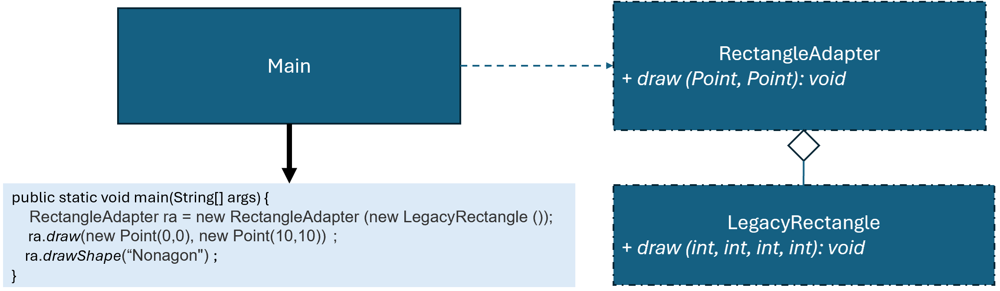

優點
缺點
總評
本次互動以單向流程描述與表面設計解釋為主，任務導向有做基本說明，但缺乏進一步批判、探究、反思等高層次互動表現，互動品質屬於初階答案陳述類型。
interface Shape {
void draw();
}
class Point {
protected int x, y;
public Point(int x, int y) {
this.x = x;
this.y = y;
}
public int getX() { return x; }
public int getY() { return y; }
public void setX(int x) { this.x = x; }
public void setY(int y) { this.y = y; }
}
class LegacyCircle {
public void draw(int x, int y, double radius) {
System.out.println("畫出圓心(" + x + " ," + y + ")，半徑" + radius + "的圓形。");
}
}
class LegacyCircleAdapter implements Shape {
private LegacyCircle legacyCircle = new LegacyCircle();
private Point point;
private double radius;
public LegacyCircleAdapter(Point point, double radius) {
this.point = point;
this.radius = radius;
}
@Override
public void draw() {
legacyCircle.draw(point.getX(), point.getY(), radius);
}
}
class LegacyRectangle {
public void draw(int x1, int y1, int x2, int y2) {
System.out.println("畫出 (" + x1 + "," + y1 + ")-(" + x2 + "," + y2 + ")的長方形。");
}
}
class LegacyRectangleAdapter implements Shape {
private LegacyRectangle legacyRectangle = new LegacyRectangle();
private Point topLeft, bottomRight;
public LegacyRectangleAdapter(Point topLeft, Point bottomRight) {
this.topLeft = topLeft;
this.bottomRight = bottomRight;
}
@Override
public void draw() {
legacyRectangle.draw(topLeft.getX(), topLeft.getY(), bottomRight.getX(), bottomRight.getY());
}
}
public class Main {
public static void main(String[] args) {
Shape p = new LegacyRectangleAdapter(new Point(0, 0), new Point(10, 10));
p.draw(); // 顯示 "畫出(0, 0)-(10, 10)的長方形。"
p = new LegacyCircleAdapter(new Point(0, 0), 5.0);
p.draw(); // 顯示 "畫出圓心(0, 0)，半徑5.0的圓形。"
}
}
!@#$報告
新設計有何優點?
這個程式主要是在用 Adapter Pattern，把原本不能直接用的舊類別包起來，讓它們可以用同一個方式操作。
一開始先定義了一個 Shape 介面，裡面只有一個 draw()，代表所有圖形最後都要能畫出來。但問題是，原本的 LegacyCircle 跟 LegacyRectangle 都不是照這個規格寫的，它們的 draw 都要吃一堆參數，像圓形要 (x, y, radius)，長方形要 (x1, y1, x2, y2)，所以沒辦法直接拿來當 Shape 用。
這時候就用 Adapter 來解決。像 LegacyCircleAdapter，它裡面包了一個 LegacyCircle，然後自己存一個 Point 跟 radius。當外面呼叫 draw() 時，它會把 Point 拆成 x 跟 y，再丟給原本的 draw(x, y, radius)。長方形也是一樣的做法，把兩個點轉成四個座標再呼叫舊的方法。
這樣做的好處是，主程式完全不用管底層到底是圓形還是長方形，也不用記那些參數怎麼傳，只要一律用 Shape 然後呼叫 draw() 就好。像 Shape p = new LegacyRectangleAdapter(...) 或換成圓形都可以直接用，寫起來會簡單很多。
簡單來說，Adapter 就是在中間多包一層，幫你把「不一樣的格式轉成一樣的」，讓舊的程式也能接到新的架構裡面用。!@#$
請檢視程式碼介面是否違反 Adapter模式，並撰寫報告，討論新設計有何優點?

Shape p = new LegacyRectangleAdapter(new Point(0, 0), new Point(10, 10)); p.draw(); //顯示 "畫出(0, 0)-(10, 10)的長方形。" p = new LegacyCircleAdapter(new Point(0, 0), 5.0)); p.draw(); //顯示 "畫出圓心(0, 0)，半徑5.0的圓形。"